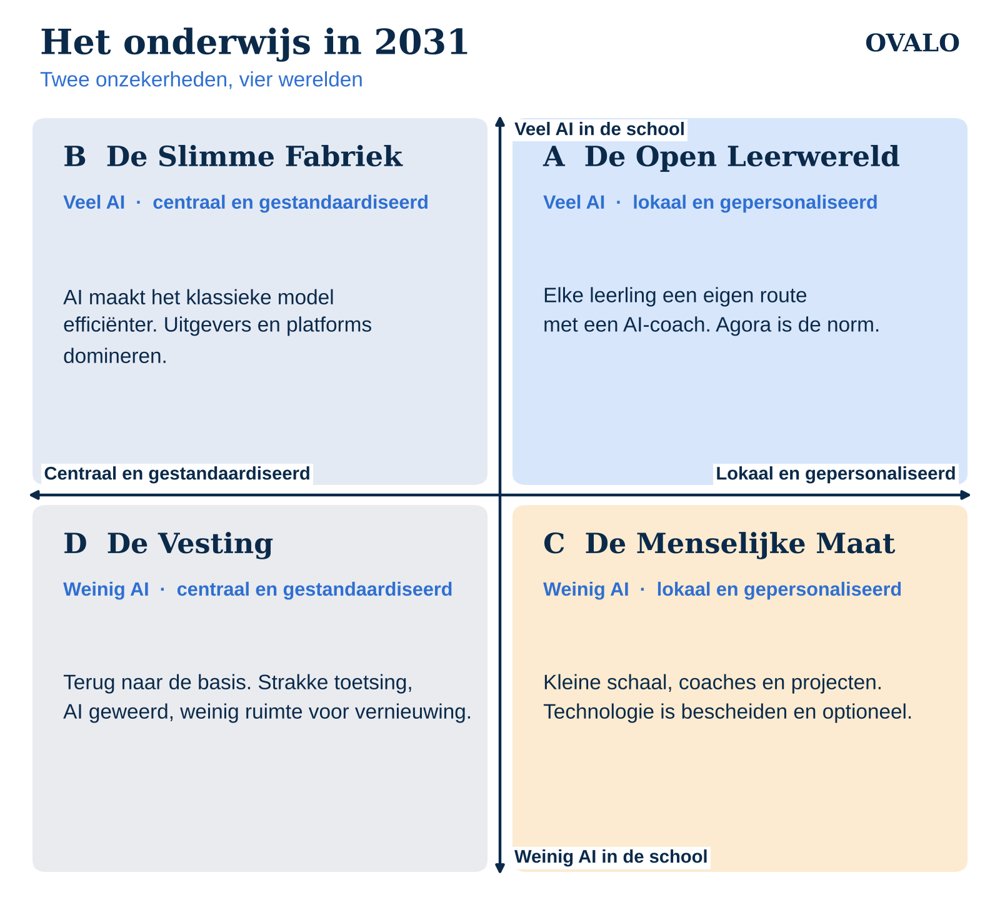

Een leerling die dit jaar in de brugklas begint, doet in 2031 eindexamen. Wat leert die leerling in de tussentijd, en met welke middelen? Eerlijk antwoord: niemand weet het. Toch moeten scholen nu keuzes maken over hun onderwijsconcept, hun team en hun technologie. Keuzes die nog jaren meegaan.
Voorspellen werkt niet. Wat wel werkt, is vooruitdenken in scenario's. In deze reeks schetsen we vier uiterste versies van het onderwijs in 2031. Niet omdat één ervan precies zo uitkomt, maar omdat je met vier verschillende werelden kunt testen of je plannen overeind blijven.
Waarom scenario's en geen voorspelling?
Scenarioplanning is een beproefde methode. Shell gebruikt hem al sinds de jaren zeventig om zich voor te bereiden op schokken die anderen niet zagen aankomen. Ook de OESO denkt zo over onderwijs: in Back to the Future of Education (2020) schetst de organisatie vier mogelijke toekomsten, van school als verlengde van het huidige systeem tot leren dat overal en altijd plaatsvindt.
De meest gebruikte variant is de 2x2-matrix. Je kiest twee ontwikkelingen die enorm belangrijk zijn én echt onzeker. Je zet ze haaks op elkaar. Zo ontstaan vier kwadranten, vier werelden die elk logisch kloppen maar sterk van elkaar verschillen.
Sommige ontwikkelingen zijn trouwens helemaal niet onzeker. Het aantal leerlingen in het voortgezet onderwijs daalt, het lerarentekort blijft, en de eisen rond privacy van leerlingdata worden niet soepeler. Die gelden in elke wereld. De vraag is wat er daarnaast gáát gebeuren.
De twee grote onzekerheden
1. Hoeveel ruimte krijgt AI in de school? Aan de ene kant een school waarin AI is verweven met lesmateriaal, begeleiding en feedback. Aan de andere kant een school waarin AI grotendeels buiten de deur blijft, door regelgeving, wantrouwen of een bewuste keuze voor minder schermen. Uitgevers experimenteren al jaren met AI-tutoring, terwijl tegelijk het debat over schermen in de klas oplaait. Beide kanten zijn dus nog volledig mogelijk.
2. Wie bepaalt hoe er geleerd wordt? Aan de ene kant een centraal gestuurd systeem: landelijke kerndoelen, uniforme toetsen, een inspectie die vooral vergelijkbare resultaten wil zien. Aan de andere kant scholen en leerlingen die zelf hun route bepalen, met projecten, coaches en persoonlijke leerdoelen. Nederland telt inmiddels meer dan dertig Agora-scholen en zo'n negenhonderd traditionele vernieuwingsscholen. Of die beweging doorzet of juist wordt teruggefloten, ligt open.
Vier werelden

- De Open Leerwereld (veel AI, lokaal gestuurd): elke leerling volgt een eigen route, met een coach en een AI-assistent die vragen stelt in plaats van antwoorden geeft. Lees: De Open Leerwereld
- De Slimme Fabriek (veel AI, centraal gestuurd): AI maakt het klassieke model efficiënter, met adaptieve methodes en automatische rapportages. Lees: De Slimme Fabriek
- De Menselijke Maat (weinig AI, lokaal gestuurd): kleine schaal, persoonlijke aandacht, projecten en techniek die bescheiden blijft. Lees: De Menselijke Maat
- De Vesting (weinig AI, centraal gestuurd): terug naar de basis, strakke toetsing en weinig ruimte voor experiment.
Geen van deze werelden is goed of fout. Elk heeft winnaars en verliezers, kansen en valkuilen. En in werkelijkheid zal 2031 waarschijnlijk een mengvorm zijn, met in de ene regio of het ene type school meer van het ene scenario dan van het andere.
Wat heb je hieraan als school?
Scenario's zijn een gespreksinstrument. Leg de vier werelden eens voor aan je team, je MR of je bestuur en stel drie vragen:
- In welke wereld voelt onze huidige koers zich het meest thuis?
- In welke wereld zouden wij het moeilijk krijgen?
- Wat kunnen we nu al doen dat in alle vier de werelden verstandig is?
Vooral die laatste vraag is waardevol. Een keuze die in elke toekomst werkt, is geen gok maar een investering. In het laatste artikel van deze reeks zetten we die keuzes op een rij: Vijf keuzes die in elke toekomst werken.
Tot slot
Bij Ovalo bouwen we software en advies voor scholen die toekomstgericht werken. Juist daarom willen we niet doen alsof we weten hoe die toekomst eruitziet. We denken liever samen met scholen na over wat er nodig is, in welke wereld dan ook.
Wil je de vier scenario's bespreken met je team? Neem contact op, dan denken we graag mee. Samen tot de top.
Bronnen
- OESO – Back to the Future of Education: Four OECD Scenarios for Schooling (2020)
- OESO – Think Scenarios, Rethink Education (2006)
- Futures Platform – 2x2 Scenario Planning Matrix: A Step-by-Step Guide
- Ouders van Nu – Agora-onderwijs
- Nederlandse Montessori Vereniging – De Staat van het Vernieuwingsonderwijs 2025
- Rijksoverheid – Prognosecijfers leerlingendaling